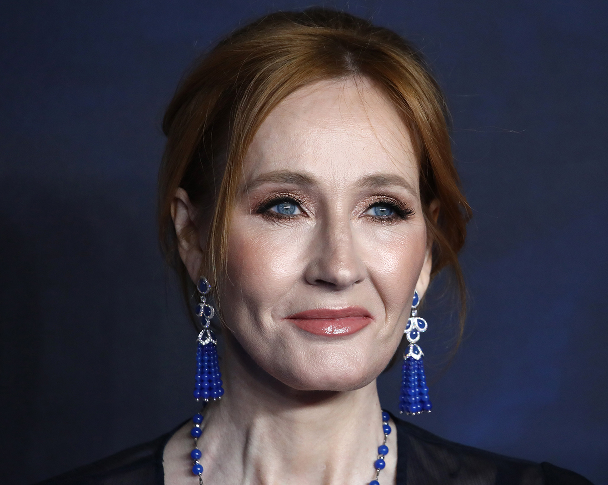

 J. K. Rowling
| 1965 | Nace en la localidad de Chipping Sodbury, cerca de Bristol. |
| 1988 | Finaliza sus estudios de lengua y literatura francesa en la Universidad de Exeter. |
| 1990 | Concibe el personaje de Harry Potter en un viaje en tren de Manchester a Londres. Fallece su madre. |
| 1992 | Enseña inglés en una escuela de idiomas de Lisboa y contrae matrimonio con Jorge Arantes, periodista de la televisión portuguesa, con quien tiene a su hija Jessica. La pareja se divorcia al año siguiente. |
| 1994 | Regresa a Edimburgo con su hija. Pasa dificultades económicas y padece fuertes depresiones. |
| 1997 | Finaliza y publica Harry Potter y la piedra filosofal, el primer libro de la serie, que obtiene un gran éxito. |
| 1998 | Publica Harry Potter y la cámara secreta. |
| 1999 | Publica Harry Potter y el prisionero de Azkabán. |
| 2000 | Publica Harry Potter y el cáliz de fuego. Contrae segundas nupcias con Neil Murray. |
| 2001 | Se estrena la película Harry Potter y la piedra filosofal, basada en la primera entrega de la serie. Las siguientes entregas serán también llevadas al cine en años sucesivos, con gran éxito de taquilla. |
| 2003 | Recibe el premio Príncipe de Asturias de la Concordia. Publica Harry Potter y la orden del Fénix. Nace su hijo David Gordon. |
| 2004 | Aparece por primera vez en la lista Forbes como la escritora más rica del mundo. |
| 2005 | Publica Harry Potter y el misterio del príncipe. Nace su hija Mackenzie Jean. |
| 2007 | Publica Harry Potter y las reliquias de la muerte, la entrega que cierra la serie. |
La publicación de su primer libro -firmado con las iniciales J. K. por consejo de los editores, recelosos de que los niños no quisieran leer un libro sobre un chico escrito por una mujer- supuso un giro mágico en su vida. La realidad del extraordinario éxito superó ampliamente todas las expectativas de las editoriales británica y estadounidense que lo habían publicado. Las posteriores ediciones de los siguientes libros de la serie (Harry Potter y la cámara secreta y El prisionero de Azkabán) reafirmaron el éxito inicial y dieron lugar a un fenómeno literario, al que la prensa denominó «pottermanía».
Recorrió sin éxito con la copia mecanografiada por ella misma editoriales del prestigio de Penguin y Harper Collins, hasta que en 1997 consiguió por fin que la prestigiosa firma británica Bloomsbury publicara el libro. Pocos meses después, Scholastic Press compró los derechos de la novela para Estados Unidos, por una suma superior a los 14,5 millones de pesetas, una cifra muy importante para un libro infantil. Rowling empezó a ser popular en su propio país, y durante los primeros meses se vio ampliamente superada por la situación, sin poder escribir ni una sola línea.
A punto de acabar el segundo libro de la serie, entró en una fase crítica y llegó a pensar que estaba escribiendo «basura», según confesaría tiempo después en una entrevista. Nada acostumbrada a manejar semejantes sumas de dinero ni a la presión de los medios de comunicación, Joanne se bloqueó y tardó en adaptarse a la nueva situación, hasta el punto de verse obligada a modificar su sencillo estilo de vida. Tuvo que dejar de escribir en el mismo café debido al acoso de admiradores y curiosos, que convirtieron el local en lugar de peregrinación, y adoptó una postura defensiva frente a las intromisiones en su vida privada. Después decidió dejar las clases definitivamente para dedicarse por entero a lo que siempre había anhelado: escribir.

Con Neil Murray, su segundo marido